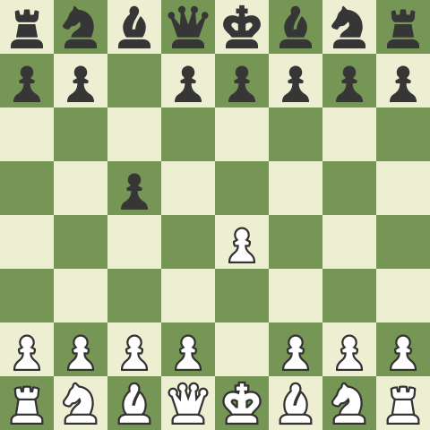
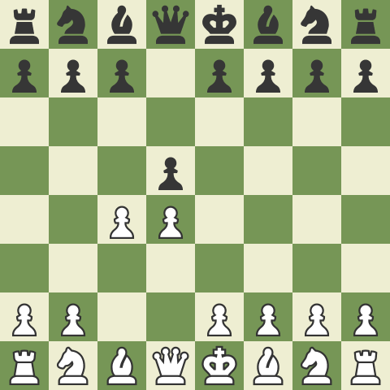
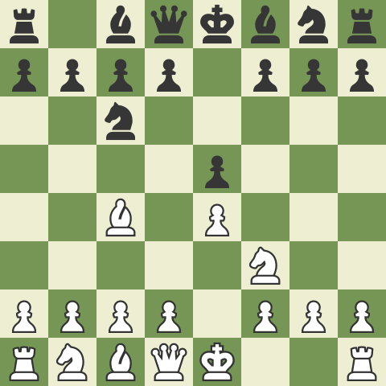

Opening
Sicilian Defense
Queen's Gambit
Italian Game



Opening Principles:
- Gain control of the center squares (d4, e4, d5, d5). Establish a pawn on at least one of the center squares.
- Develop your pieces (bishops, knights, rooks, and queen) as quickly as possible before mounting an attack. Developing a piece means moving from it’s original starting position to a place on the board where it is being productive – generally attacking the center.
- Move your king to safety – usually by castling.
- Develop bishops and knights before your queen and rooks.
- Attack the center squares at least as many times as your opponent.
- Make sure the center is attacked and defended properly before playing on the flanks.
- Don’t move the same piece more than once in the opening unless it is absolutely necessary. Developing quickly is important. Moving the same piece more than once wastes time and will put you at a disadvantage.
- Connect your rooks as quickly as possible.